Crash‑proof dashcam
The whole 2592×1944 sensor, scaled (never cropped) to 1440×1080 H.264 at 15 fps. Ten‑minute clips that survive a yanked power cable with at most two seconds lost.
- MPEG‑TS
- fsync 1 s
- loop recording
- protect button
Raspberry Pi CM4 · composite video · 5″ CRT
A 2001 black‑and‑white reversing monitor, a Raspberry Pi CM4 and a wasteland navigator.
A dashcam, a moving satellite map and a Pip‑Boy‑style HUD, fed into a WAECO Mobitronic tube straight from the CM4's own composite DAC. The screen in the photo is the real display code driving the Las Vegas Strip in your browser.
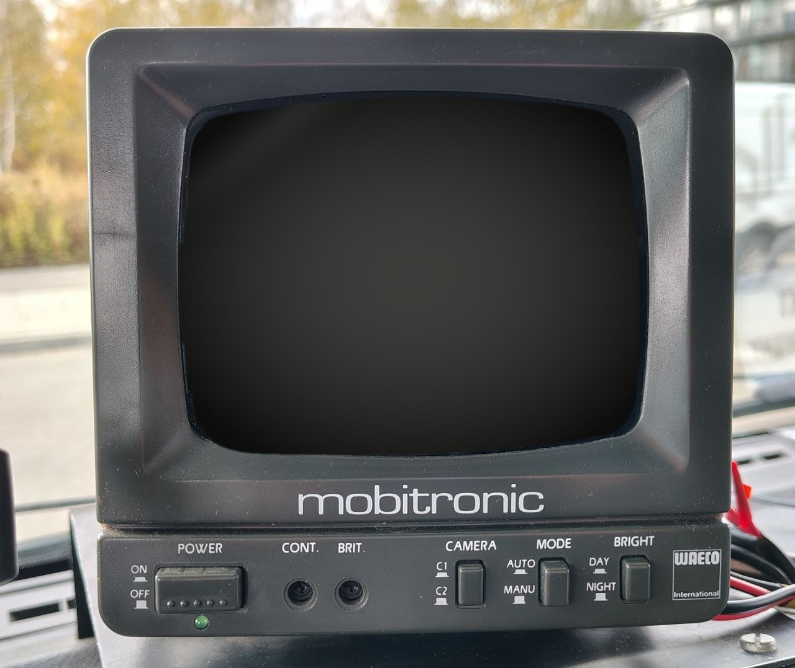
Live, not a video. The same renderer, HUD and speed logic that run on the Pi, in demo mode: simulated GPS on a loop around the Strip, Esri satellite tiles, a still frame for the camera view.
Every switch below talks to the live screen above. demo link: waiting
Drive
Map orientation
Compass style
Screen mode
Map layer
01 What it does
A Raspberry Pi Compute Module 4 behind the dashboard records the road, knows where it is and which way it points, and draws all of it on a tube older than most smartphones.
The whole 2592×1944 sensor, scaled (never cropped) to 1440×1080 H.264 at 15 fps. Ten‑minute clips that survive a yanked power cable with at most two seconds lost.
A hand‑written Canvas renderer for Esri World Imagery and streets. In heading‑up mode the car icon turns first and the map catches up on a spring. Zoom follows speed; when you stop, the screen switches to the camera.
Three compass designs (Riveted dial, Heading tape, Brass compass), tall Oswald digits, stencil warnings and a spiked wasteland muscle car, all sized for a 92 × 69 mm black‑and‑white picture.
A Holybro M8N configured over UBX for 10 Hz fixes and static hold, plus an IST8310 compass that calibrates itself against the GPS course while you drive. GPS time keeps the clock right with no RTC.
A password‑protected web UI on the laptop over Wi‑Fi: dashboard, live WebRTC video, recordings, map and compass settings, skyplot, and a 1:1 preview of the CRT in real millimetres, calibrated against a bank card.
No HDMI converter. One wire soldered to pin 111 (VDAC_COMP) of the CM4 goes into the monitor's DIN socket. NTSC 480i/60, with margins and mirroring tuned to the RV‑50.
02 In the van
The RV‑50 sits on top of a Peugeot dashboard, where a reversing monitor belongs. The Pi, camera and GPS live behind it on a single 12 V feed.
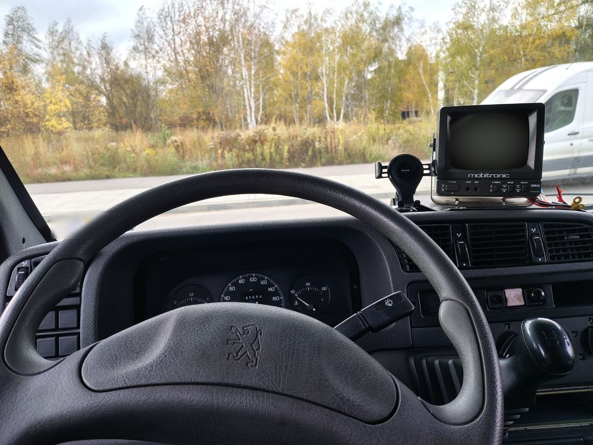
03 Hardware
Off‑the‑shelf modules and one very old monitor. The interesting parts are a 10‑pin GPS harness and a single wire on a 0.4 mm pitch connector.
| Compute | Raspberry Pi Compute Module 44 GB RAM, 32 GB eMMC, Wi‑Fi. Raspberry Pi OS (Debian 13 trixie, 64‑bit) |
|---|---|
| Carrier | Waveshare CM4‑NANO‑BUSB‑C power, 40‑pin GPIO, CSI camera port |
| Camera | OV5647, 5 MPCSI0 ribbon; full sensor 2592×1944 at 15.6 fps |
| GPS + compass | Holybro M8Nu‑blox M8N GNSS + IST8310 magnetometer, safety switch with LED, buzzer, on one JST‑GH 10‑pin plug |
| Display | WAECO Mobitronic RV‑50 (2001)5″ black‑and‑white CRT reversing monitor, two camera inputs on DIN plugs |
| Power | DC‑DC 12 → 5 V, 3 AOne shared ground for the Pi and the monitor |
| Software | Python · FastAPI · Picamera2 · MediaMTXcage + Chromium kiosk, gpsd + chrony, vanilla JS on Canvas |
The CM4's composite DAC is on the module connector but the carrier board doesn't route it out, so it gets a wire of its own.
RX/TX are labelled on the module side, so they cross over. Everything is 3.3 V logic, so it connects directly; only the buzzer needs a MOSFET.
IST8310 answers on I²C address 0x0E. The safety switch protects the current clip from loop deletion, and its LED shows REC.
04 Architecture
Recording runs in its own process: if the web server falls over, the dashcam keeps rolling. systemd restarts anything that dies, and the display is just a web page in a kiosk browser.
05 The hard parts
Most of it went to plan. These parts didn't, and they're the reason the device works.
Car power dies without warning. An MP4 keeps its index at the end of the file, so if the power goes mid‑clip the whole file is unreadable. fallout.nav writes MPEG‑TS instead: independent 188‑byte packets with no index, playable up to the last byte written.
The recorder calls fsync() every second, places a keyframe every second, and on boot trims the last file to a whole number of packets. Pull the plug and you lose at most two seconds, not ten minutes.
LessonPick formats that fail gracefully, then make the OS flush on your schedule.
The CM4 has a composite video DAC, but the Waveshare carrier doesn't route it to a connector. So a wire goes straight onto pin 111 (VDAC_COMP) of the module's J2 connector. Counting pins at that pitch goes wrong easily; the grounds make a better landmark. On the inner row a ground comes after every two signal pins:
The right pin is the left one of the pair between the first two grounds. One pin to the left is 109, PCIe_nRST: a flat 0 V and an hour of head‑scratching.
LessonNavigate by landmarks, not by counting.
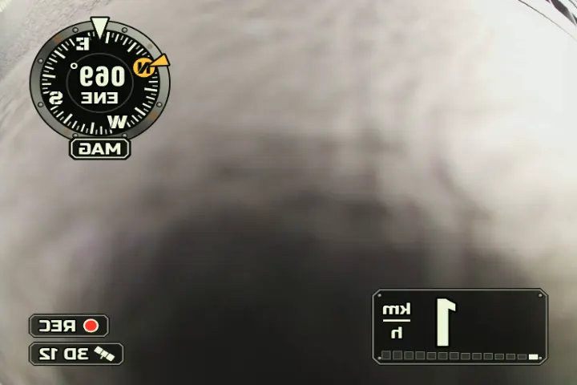
The plan said PAL 576i/50. The 2001 tube couldn't hold vertical sync: the frame jumped with 288p, mono, firmware or KMS output, dimming and DC‑level shifts alike. At NTSC 480i/60 it locks solid. At 60 Hz the monitor only shows the central ~80 % × 90 %, so kernel margins squeeze the picture into the visible area.
LessonOld hardware has opinions. Try the boring alternative early.
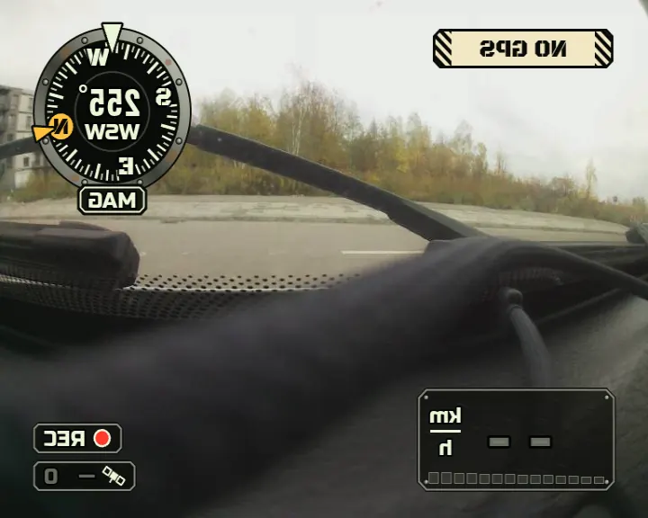
The RV‑50 is a reversing monitor: it flips the picture so the rear view reads like a mirror. The first map came out backwards. Now the display renders mirrored (mirror_x), and even the 12 px centring shift goes the "wrong" way: right on the screen is left in the signal.
LessonRead the device's purpose, not just its spec sheet.
The monitor isolates its camera inputs poorly. The van's own reversing camera on the neighbouring channel bleeds into ours, and ours into it. You can't fix that with a soldering iron inside a 25‑year‑old monitor, so the fix is in software: a control that blanks fallout.nav's output, so the reversing camera gets a clean picture when it matters.
Ground matters too: Pi, DC‑DC and monitor share one ground, otherwise the DC‑DC converter's noise shows up as rolling bars.
LessonWhen the hardware leaks, give the user an off switch.
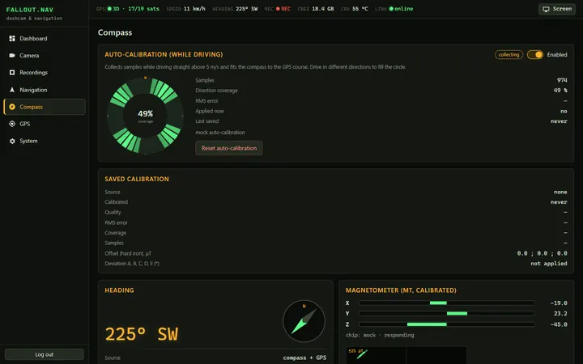
Inside a steel van, a magnetometer mostly measures the van. Instead of a figure‑of‑eight dance in a car park, fnav‑core collects samples while you drive straight above 5 m/s, compares them with the GPS course, and fits hard‑iron offsets and a deviation curve. Drive in different directions and the coverage ring fills up. Above 3 m/s the heading comes from GPS anyway; the compass covers slow speeds and stops.
LessonUse the sensor you trust to teach the one you don't.
06 Screenshots
The HUD designs, real frames from the Pi's composite output, and the web UI running against the mock backend.
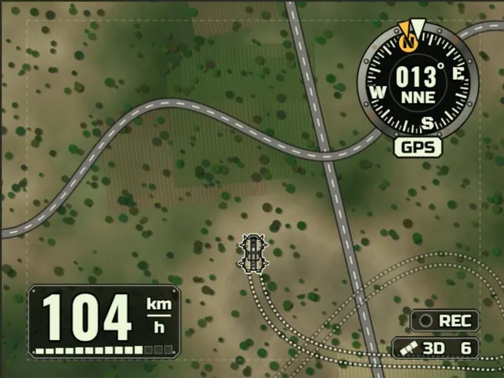
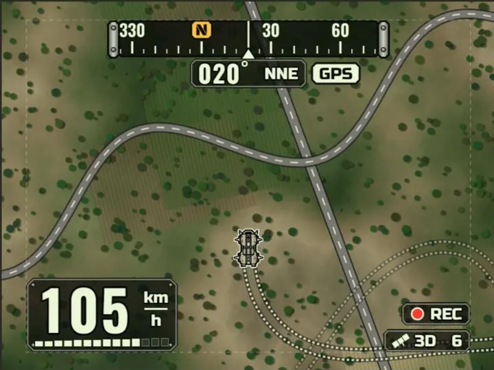
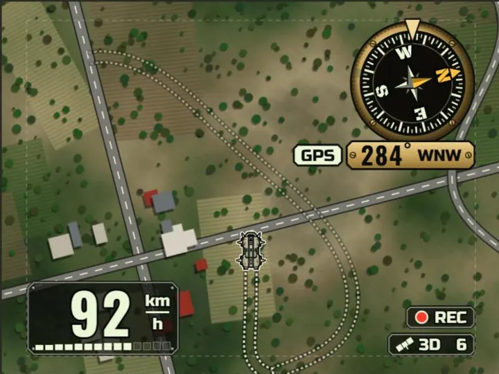
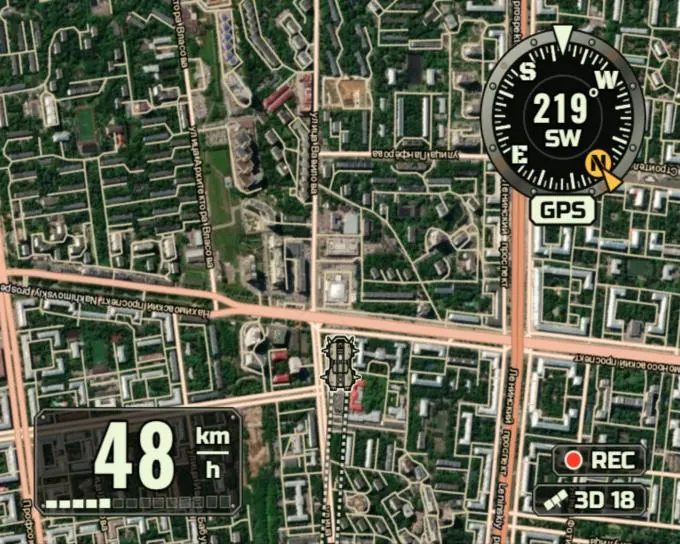
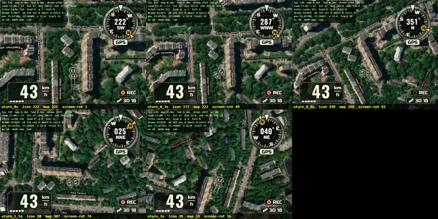
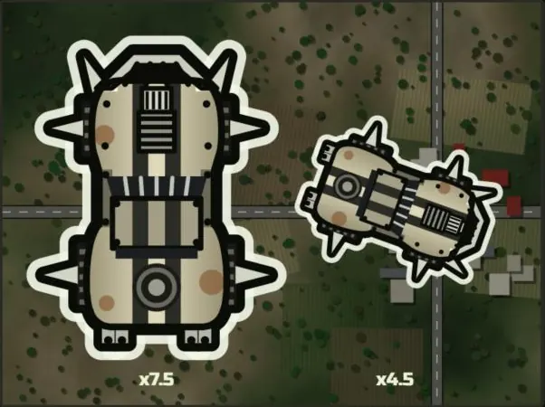
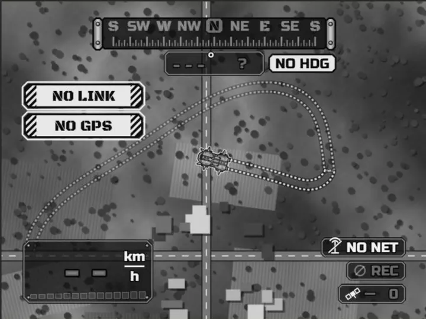
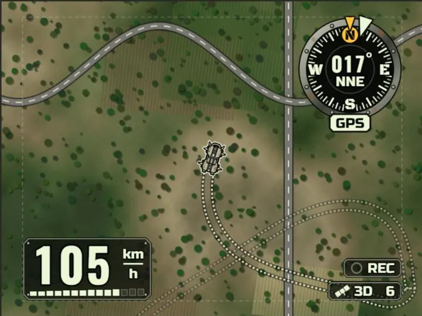
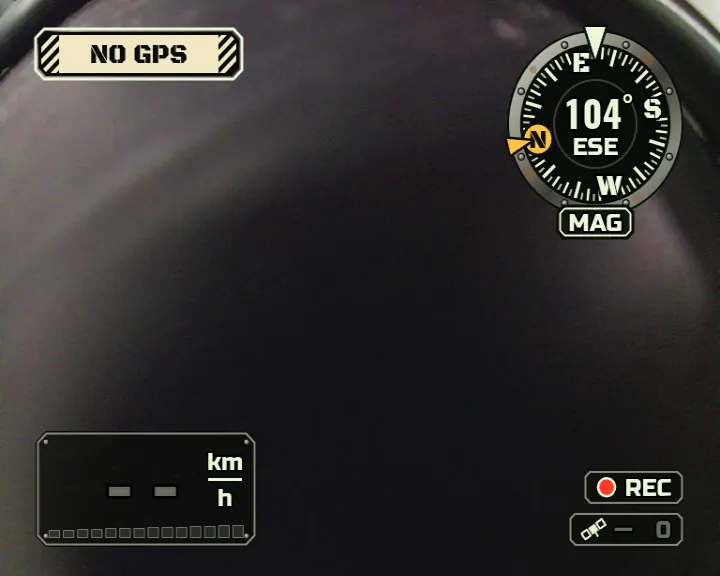
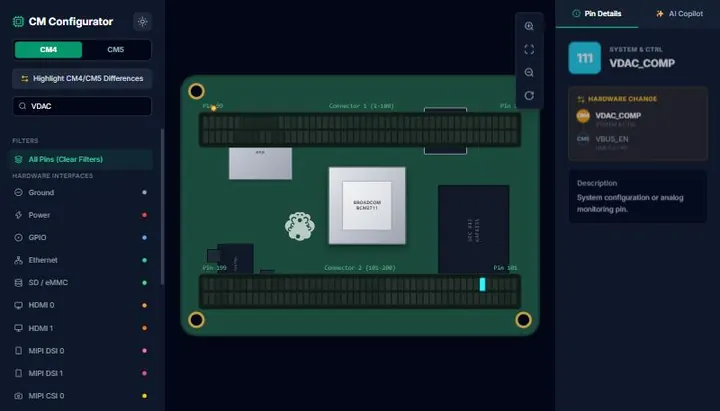
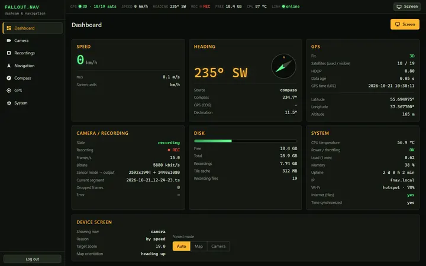
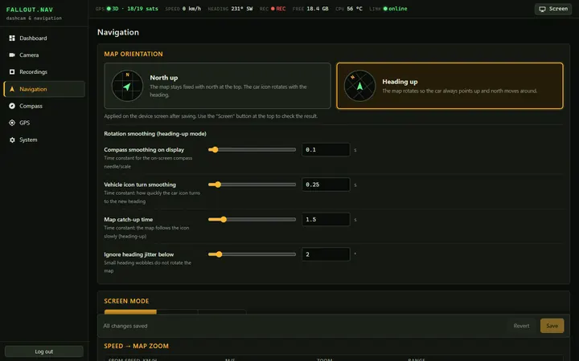
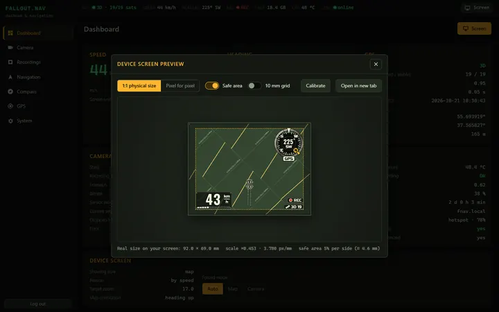
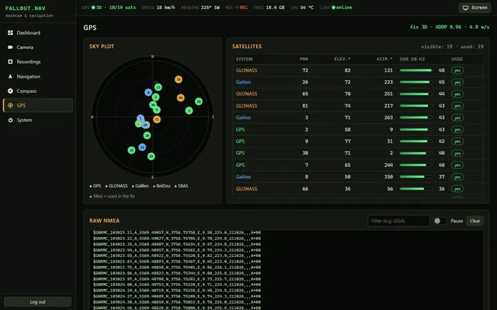
07 Built with AI agents
fallout.nav was written by a team of Claude agents working in parallel. A lead agent wrote the plan and the contracts, gave each agent its own part of the repository, and then did the integration and all the work on the real device.